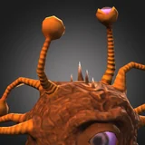
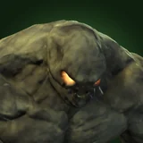
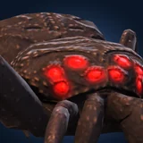

Alliance
Conjurer
A class alliance of 5 units with steps at 2 and 4.
Callers of things from beyond the spire. Every summoned ally deals 20% more damage (40% with four Conjurers). Conjurers share the bonus.
Conjurer is a class alliance carried by 5 units. It has 2 steps, reached with 2 and 4 different Conjurer units on your board. See How alliances count for how units are counted.
Steps
| Units needed | What it grants |
|---|---|
| 2 | Conjurer units and the summoned units that carry the Conjurer mark: +20% attack damage. The attack damage bonus is for attacks only: ability damage is not raised. |
| 4 | Conjurer units and the summoned units that carry the Conjurer mark: +40% attack damage. The attack damage bonus is for attacks only: ability damage is not raised. |
- Only the highest step you have reached applies. Each step states its full effect; steps do not add together.
- Summoned units that carry Conjurer get the effect too, including those called during the fight. They are listed under Summoned units.
Units (5)
Tier 1: Common (1)
Tier 2: Uncommon (1)
Tier 3: Rare (1)
Tier 4: Epic (2)
Summoned units
18 summoned units also carry the Conjurer alliance. Summoned units never count toward a step, but they are Conjurer units, so any step that affects Conjurer units affects them. See Summons and placeables.

Rift EchoTier 1 SkitterlingTier 1
SkitterlingTier 1 Thorn HoundTier 1
Thorn HoundTier 1 Thorn SaplingTier 1
Thorn SaplingTier 1
Bramble GolemTier 2 Carrion WingTier 2
Carrion WingTier 2 Greater Rift EchoTier 2
Greater Rift EchoTier 2
Cinder MiteTier 3 Dire WolfTier 3
Dire WolfTier 3 Elder ThornwyrmTier 3
Elder ThornwyrmTier 3 Mire WardTier 3
Mire WardTier 3 Pact ArcherTier 3
Pact ArcherTier 3 Pact BruiserTier 3
Pact BruiserTier 3 Pit GolemTier 3
Pit GolemTier 3 Brood HatchlingTier 4
Brood HatchlingTier 4 Spire BearTier 4
Spire BearTier 4 Grave ShamblerTier 5
Grave ShamblerTier 5 Stormhide BeastTier 5
Stormhide BeastTier 5Pairs well with
Every alliance that shares a unit with Conjurer is listed here. A shared unit counts toward both alliances at once, so fielding it moves both closer to a step. The Alliance matrix shows every overlap.
| Alliance | Kind | Shared units | Its steps | Units in both |
|---|---|---|---|---|
 Thornkin Thornkin | Race | 3 | 2 / 4 / 6 |  Thornwood Seer Thornwood Seer Thorn Caller Thorn Caller Bearclaw Wilder Bearclaw Wilder |
 Arcanist Arcanist | Class | 1 | 3 / 6 | Thorn Caller |
 Feral Feral | Race | 1 | 2 / 4 / 6 | Bearclaw Wilder |
 Mender Mender | Class | 1 | 2 / 4 | Thornwood Seer |
 Mirefolk Mirefolk | Race | 1 | 2 / 4 |  Fen Mystic Fen Mystic |
 Swarmkin Swarmkin | Race | 1 | 2 / 4 |  Brood Queen Brood Queen |
| Venomist | Class | 1 | 3 | Fen Mystic |
How it counts
- Only units on your board count. Units on the bench do not.
- Each different unit counts once. Two copies of the same unit count as one, and star level makes no difference.
- Summoned units never count.
The full rules are on How alliances count.